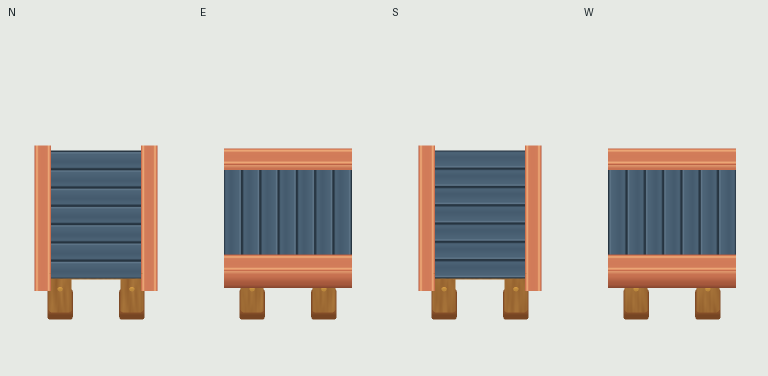

24 actual native frames per facing ·12fps · original root/cardinal convention. Candidate awaits independent judge.
Alltime per-frame RGB/alpha measurements: continuity-metrics.json. Each-sprite bilinear preview approximates Godot LINEAR_WITH_MIPMAPS; it is not an actual game screenshot.
